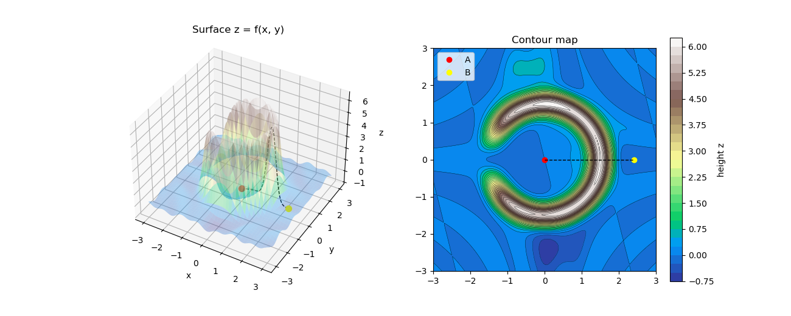
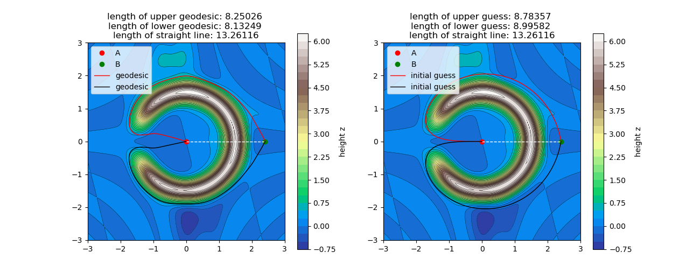
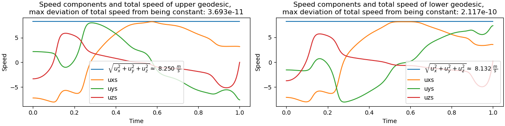
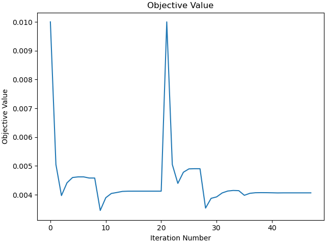
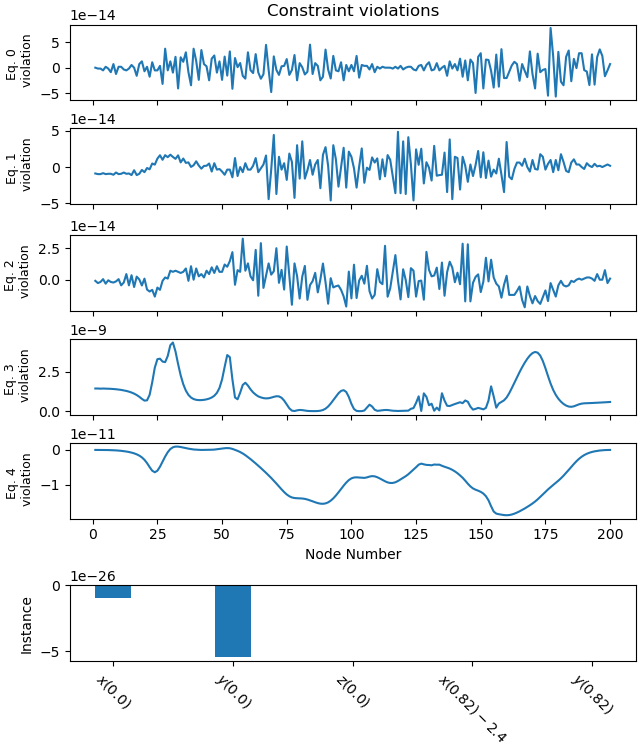
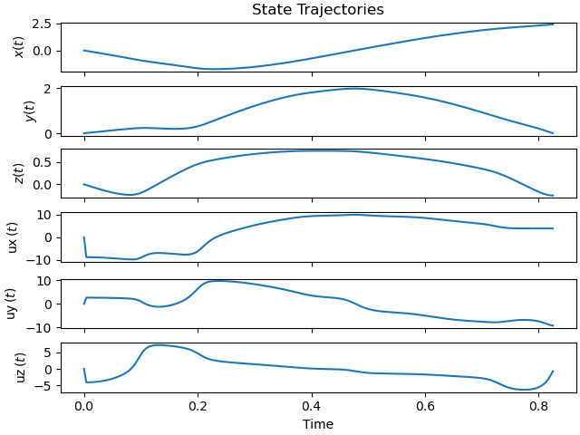
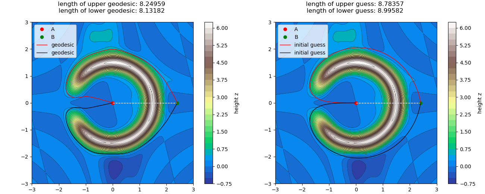

Note
Go to the end to download the full example code.
Shortest Path on a Surface z = f(x, y)¶
Objectives¶
Show an example how to use scipy’s solve_bvp to numerically solve a variational problem.
Compare this approach with the direct minimisation of the curve length, using opty.
Description¶
Find the shortest path on a surface defined by z = f(x, y) between two points A and B. The surface is such that the shortest path is not a function but a relation.
Notes¶
Good initial guesses are needed for both methods.
It shows that both method will only find local extrema (variational approach) / local minima (opty)
num_nodesplay quite an important role - and larger is not always better.The results of both approaches are very similar.
import numpy as np
import sympy as sm
import sympy.physics.mechanics as me
import matplotlib.pyplot as plt
from sympy.calculus.euler import euler_equations
from scipy.integrate import solve_bvp
from opty import Problem
from opty.utils import MathJaxRepr
from IPython.display import display, Math
The surface.
num_nodes = 201
t = me.dynamicsymbols._t
x, y = sm.symbols("x y", real=True)
xh, yh = sm.symbols("xh yh", real=True)
H, R, w, sigma = 6.0, 1.5, 0.3, 0.15
r = sm.sqrt(x**2 + y**2 + 1e-6)
f_expr = (H*sm.exp(-(r - R)**2/w**2) * (1 - sm.exp(-(1 + x/r)/sigma))
+ 0.25*sm.sin(2.0*x + 0.5*y)*sm.cos(1.7*y*x)
+ 0.6*sm.exp(-((x + 0.5)**2 + (y - 2.5)**2)/0.3)
- 0.5*sm.exp(-((x - 0.3)**2 + (y + 2.4)**2)/0.4))
These derivatives are needed for the right hand side of the Euler equations.
f = sm.lambdify((x, y), f_expr, cse=True)
fx = sm.lambdify((x, y), f_expr.diff(x), cse=True)
fy = sm.lambdify((x, y), f_expr.diff(y), cse=True)
fxx = sm.lambdify((x, y), f_expr.diff(x, 2), cse=True)
fxy = sm.lambdify((x, y), f_expr.diff(x, y), cse=True)
fyy = sm.lambdify((x, y), f_expr.diff(y, 2), cse=True)
Needed below for opty.
f_expr_h = f_expr.subs({x: xh, y: yh}) # needed below for opty
Plot the surface, the points A and B, and the straight line connecting them.
A = np.array([0.0, 0.0])
B = np.array([2.4, 0.0])
print(f"A({A[0]:.2f}, {A[1]:.2f}, {f(*A):.3f})")
print(f"B({B[0]:.2f}, {B[1]:.2f}, {f(*B):.3f})")
X, Y = np.meshgrid(np.linspace(-3, 3, 220), np.linspace(-3, 3, 220))
Z = f(X, Y)
fig = plt.figure(figsize=(13, 5.2))
ax = fig.add_subplot(1, 2, 1, projection="3d")
ax.plot_surface(X, Y, Z, cmap="terrain", linewidth=0, antialiased=True,
alpha=0.3)
ax.scatter(*A, f(*A), color="red", s=50)
ax.scatter(*B, f(*B), color="yellow", s=50)
ax.set_title("Surface z = f(x, y)")
ax.view_init(38, -60)
ax.set_xlabel("x")
ax.set_ylabel("y")
ax.set_zlabel("z")
XX = np.linspace(A[0], B[0], num_nodes)
YY = np.linspace(A[1], B[1], num_nodes)
ZZ = f(XX, YY)
ax.plot(XX, YY, ZZ, color="black", lw=1, linestyle="--")
ax2 = fig.add_subplot(1, 2, 2)
cs = ax2.contourf(X, Y, Z, 30, cmap="terrain")
fig.colorbar(cs, ax=ax2, label="height z")
ax2.contour(X, Y, Z, 30, colors="k", linewidths=0.3)
ax2.plot(*A, "o", color="red", label="A")
ax2.plot(*B, "o", color="yellow", label="B")
ax2.plot([A[0], B[0]], [A[1], B[1]], color='black', lw=1, linestyle="--")
ax2.set_aspect("equal")
ax2.legend(loc="upper left")
_ = ax2.set_title("Contour map")

A(0.00, 0.00, -0.000)
B(2.40, 0.00, -0.248)
Solve the Problem using the Euler Equations¶
Some explanation on how to get the Euler equations for this problem.
Length of a curve on the surface
The curve in space is
\(\mathbf r(t) = \big(x(t),\; y(t),\; f(x(t),y(t))\big)\)
\(|\dot{\mathbf r}|^2 = \dot x^2 + \dot y^2 + (f_x\dot x + f_y\dot y)^2 = E\,\dot x^2 + 2F\,\dot x\dot y + G\,\dot y^2\)
where
\(E = 1 + f_x^2,\qquad F = f_x f_y,\qquad G = 1+f_y^2\)
The length of the curve is
\(L[x,y, \dot x, \dot y] = \int_0^1 \sqrt{E\,\dot x^2 + 2F\, \dot x\dot y + G\,\dot y^2}\;dt , \qquad (x,y)(0)=A,\;(x,y)(1)=B\)
From length to energy
One could apply Euler’s equations directly to \(L\). There is a snag, however: \(L\) does not depend on how the curve is parametrised (walking the same path slower or faster gives the same length). Consequently the Euler equations of \(L\) are degenerate: they determine the shape of the curve but not its parametrisation, and solve_bvp canot solve this easily.
The standard trick is to minimise the energy instead:
(The (arbitrary) upper limit of integration is taken as 1, meaning the shortest path is traversed from t=0 to t=1. This determines \(\dot x\) and \(\dot y\), and hence \(\dot z = f_x \dot x + f_y \dot y\) along the path.)
\(J[x,y, \dot x, \dot y] = \int_0^1 \Lambda\,dt,\qquad \Lambda(x,y,\dot x,\dot y) = \tfrac12\left(E\,\dot x^2 + 2F\,\dot x\dot y + G\,\dot y^2\right) = \tfrac12|\dot{\mathbf r}|^2\)
Energy fixes the parametrisation
Write the speed as \(s(t) = |\dot{\mathbf r}(t)|\). Then
\(L = \int_0^1 s\,dt, \qquad J = \tfrac12\int_0^1 s^2\,dt .\)
Length cannot fix the parametrisation.
Re-time the curve by \(t = \varphi(\tau)\) with \(\varphi\) increasing from \(0\) to \(1\). The speed becomes \(s(\varphi(\tau))\,\varphi'(\tau)\), but \(dt = \varphi'\,d\tau\) cancels the factor \(\varphi'\), so \(L\) is unchanged. If one curve minimises \(L\), every re-timed copy does too.
By the Cauchy–Schwarz inequality:
\(L^2 = \Big(\int_0^1 1\cdot s\,dt\Big)^2 \;\le\; \int_0^1 1^2\,dt \cdot\int_0^1 s^2\,dt = 2J ,\)
with (obviously) equality if \(s\) is constant. Hence \(J \ge \tfrac12 L^2\) for every curve:
for a fixed path (fixed \(L\)), \(J\) is smallest when the path is traversed at constant speed;
over all paths, the smallest possible value \(J = \tfrac12 L_{\min}^2\) is reached by the shortest path traversed at constant speed.
So minimising \(J\) gives the same curve as minimising \(L\), and picks out one parametrisation: constant speed.
Euler equations. For \(q \in \{x, y\}\),
\(\frac{d}{dt}\frac{\partial \Lambda}{\partial \dot q} - \frac{\partial \Lambda}{\partial q} = 0\)
Deriving the geodesic equations with SymPy
Derivation for a general function \(f\) (an undefined SymPy Function), so the result holds for every surface.
Euler equations produces the two Euler equations; they must be solved for the second derivatives \(\ddot x,\ddot y\).
X_, Y_ = sm.Function("x")(t), sm.Function("y")(t)
F_ = sm.Function("f")
zt = F_(X_, Y_)
Lam = 1/2 * (X_.diff(t)**2 + Y_.diff(t)**2 + zt.diff(t)**2) # ½|r'|²
EL = euler_equations(Lam, [X_, Y_], t)
sol = sm.solve([eq.lhs for eq in EL], [X_.diff(t, 2), Y_.diff(t, 2)],
dict=True)[0]
xdd_general = sm.simplify(sol[X_.diff(t, 2)])
ydd_general = sm.simplify(sol[Y_.diff(t, 2)])
x_help = me.dynamicsymbols('x')
y_help = me.dynamicsymbols('y')
x equation.
MathJaxRepr(sm.Eq(x_help.diff(t, 2), xdd_general))
y equation.
MathJaxRepr(sm.Eq(y_help.diff(t, 2), ydd_general))
Solving the boundary value problem with solve_bvp
solve_bvp needs a first-order system. With the state vector
\(\mathbf u = (x,\; y,\; v_x,\; v_y),\qquad v_x = \dot x,\; v_y=\dot y\)
the system is with \(Q :=f_{xx} \dot{x}^2 + 2f_{xy} \dot{x} \cdot \dot{y} + f_{yy} \dot{y}^2\)
\(\dot x = v_x,\quad \dot y = v_y,\quad \dot v_x = -\frac{f_x Q}{1+f_x^2+f_y^2},\quad \dot v_y = -\frac{f_y Q}{1+f_x^2+f_y^2}\)
(see the print outs above, with \(\dot v_x := \ddot x\) and \(\dot v_y := \ddot y\))
with four boundary conditions (two at each end):
\(x(0)=x_A,\; y(0)=y_A,\; x(1)=x_B,\; y(1)=y_B\)
def geodesic_rhs(t, u):
# right-hand side of the geodesic ODE; u has shape (4, m), m being the
# number of initial mesh points.
X, Y, VX, VY = u
gx, gy = fx(X, Y), fy(X, Y)
Qv = fxx(X, Y)*VX**2 + 2*fxy(X, Y)*VX*VY + fyy(X, Y)*VY**2
k = Qv / (1 + gx**2 + gy**2)
return np.vstack([VX, VY, -gx*k, -gy*k])
def boundary_conditions(ua, ub):
# residuals that must vanish: position at t=0 is A, at t=1 is B
return np.array([ua[0] - A[0], ua[1] - A[1], ub[0] - B[0], ub[1] - B[1]])
def curve_length(sol, n=4000):
# length in 3D of the curve described by a solve_bvp solution
tt = np.linspace(0, 1, n)
X, Y = sol.sol(tt)[:2]
P = np.vstack([X, Y, f(X, Y)])
return np.sum(np.linalg.norm(np.diff(P, axis=1), axis=0))
Two initial guesses:
above the obstruction, side = 1
below the obstraction, side = -1
Initial guess that leaves the ring through the gap at \(\theta = \pi\), goes around the outside of the ring and ends at B.
side = +1: around the top
side = -1: around the bottom
t_mesh = np.linspace(0, 1, num_nodes)
def hook_guess(t_mesh, A, B, R, margin=0.5, side=+1):
r_A, r_B = np.hypot(*A), np.hypot(*B)
r_out = R + margin # radius just outside the ridge
th_B = np.arctan2(B[1], B[0])
th_end = th_B if side > 0 else th_B + 2*np.pi
s = t_mesh
# radius: rises quickly to r_out, stays there, ends at r_B
r = r_A + (r_out - r_A)*(1 - (1 - s)**6) + (r_B - r_out)*s**6
# angle: stays near pi (the gap) while the radius grows, then sweeps to B
th = np.pi + (th_end - np.pi)*s**2
X, Y = r*np.cos(th), r*np.sin(th)
X += (A[0] - X[0])*(1 - s) + (B[0] - X[-1])*s # hit A and B exactly
Y += (A[1] - Y[0])*(1 - s) + (B[1] - Y[-1])*s
return np.vstack([X, Y, np.gradient(X, s), np.gradient(Y, s)])
Solve the boundary value problem for both initial guesses.
sol_list = []
length_list = []
guess_list = []
for side in [+1, -1]:
guess = hook_guess(t_mesh, A, B, R, side=side)
sol = solve_bvp(geodesic_rhs, boundary_conditions, t_mesh, guess,
tol=1e-8, max_nodes=50000)
print(sol.message, f"mesh nodes used: {sol.x.size:,}")
print(f"length of geodesic, going {'up' if side > 0 else 'down'} :"
f" {curve_length(sol):.5f}")
sol_list.append(sol)
length_list.append(curve_length(sol))
guess_list.append(guess)
# Length of the straight line connecting A and B on the surface
XX = np.linspace(A[0], B[0], num_nodes)
YY = np.linspace(A[1], B[1], num_nodes)
ZZ = f(XX, YY)
P = np.vstack([XX, YY, ZZ])
laenge = np.sum(np.linalg.norm(np.diff(P, axis=1), axis=0))
length_list.append(laenge)
print(f"length of straight line: {laenge:.5f}")
length_np = np.array(length_list)
The algorithm converged to the desired accuracy. mesh nodes used: 7,466
length of geodesic, going up : 8.25026
The algorithm converged to the desired accuracy. mesh nodes used: 6,796
length of geodesic, going down : 8.13249
length of straight line: 13.26116
Plot the geodesics and the straight line on the surface.
print(f"A({A[0]:.2f}/{A[1]:.2f}/{f(*A):.3f})")
print(f"B({B[0]:.2f}/{B[1]:.2f}/{f(*B):.3f})")
X, Y = np.meshgrid(np.linspace(-3, 3, 220), np.linspace(-3, 3, 220))
Z = f(X, Y)
fig, ax = plt.subplots(1, 2, figsize=(13, 5.2))
for i in range(2):
ax2 = ax[i]
cs = ax2.contourf(X, Y, Z, 30, cmap="terrain")
fig.colorbar(cs, ax=ax2, label="height z")
ax2.contour(X, Y, Z, 30, colors="k", linewidths=0.3)
ax2.plot(*A, "o", color="red", label="A")
ax2.plot(*B, "o", color="green", label="B")
ax2.plot([A[0], B[0]], [A[1], B[1]], "w--", lw=1)
ax2.set_aspect("equal")
ax2.legend(loc="upper left")
ax[0].set_title(f"length of upper geodesic: {length_list[0]:.5f} \n"
f"length of lower geodesic: {length_list[1]:.5f} \n"
f"length of straight line: {length_list[2]:.5f}"
)
farben = ["red", "black"] # colors for the geodesics
tt = np.linspace(0, 1, 200)
for i, sol in enumerate(sol_list):
xs, ys = sol.sol(tt)[:2]
ax[0].plot(xs, ys, lw=1, label="geodesic", color=farben[i])
ax[0].legend(loc="upper left")
length_list_guesses = []
for i, guess in enumerate(guess_list):
xs, ys = guess[:2]
ZZ = f(xs, ys)
P = np.vstack([xs, ys, ZZ])
length = np.sum(np.linalg.norm(np.diff(P, axis=1), axis=0))
ax[1].plot(xs, ys, lw=1, label="initial guess", color=farben[i])
length_list_guesses.append(length)
ax[1].legend(loc="upper left")
_ = ax[1].set_title(f"length of upper guess: {length_list_guesses[0]:.5f} \n"
f"length of lower guess: {length_list_guesses[1]:.5f} \n"
f"length of straight line: {length_list[2]:.5f}")

A(0.00/0.00/-0.000)
B(2.40/0.00/-0.248)
This confirms, as stated above, that the energy is minimised with constant speed. solve_bvp selects the constant speed so that the trajectory is travelled in 1 sec. (See the boundary conditions above)
namen = ['upper geodesic', 'lower geodesic']
fig, ax = plt.subplots(1, 2, figsize=(12, 3), layout="constrained")
for i, sol in enumerate(sol_list):
xs, ys, uxs, uys = sol.sol(tt)
uzs = fx(xs, ys) * uxs + fy(xs, ys) * uys
speed = np.sqrt(uxs**2 + uys**2 + uzs**2)
delta = (np.max(speed) - np.min(speed))
ax[i].plot(tt, speed,
label=r"$\sqrt{u_x^2 + u_y^2 + u_z^2} \approx$ " +
f"{np.mean(speed):.3f}" + r" $\frac{m}{s}$")
ax[i].plot(tt, uxs, label='uxs')
ax[i].plot(tt, uys, label='uys')
ax[i].plot(tt, uzs, label='uzs')
ax[i].set_xlabel("Time")
ax[i].set_ylabel("Speed")
ax[i].set_title(f'Speed components and total speed of {namen[i]}, \n'
"max deviation of total speed from being constant: "
f"{delta:.3e}")
_ = ax[i].legend()

Use opty¶
If the point travels at constant speed and the travel time is to be minimized, the path selected must be the shortest one possible.
Set up the equations of motion.
x, y, z, ux, uy, uz = me.dynamicsymbols('x y z ux uy uz')
r = sm.sqrt(x**2 + y**2 + 1.e-12)
v = sm.symbols('v')
hill = me.msubs(f_expr_h, {xh: x, yh: y})
eom = sm.Matrix([
x.diff(t) - ux,
y.diff(t) - uy,
z.diff(t) - uz,
ux**2 + uy**2 + uz**2 - v**2, # constant speed
z - hill, # surface constraint
])
hill_lam = sm.lambdify((x, y), hill)
Set up a Problem instance.
num_nodes = 201
h = sm.symbols('h')
state_symbols = [x, y, z, ux, uy, uz]
t0, tf = 0.0, h * (num_nodes - 1)
interval_value = h
par_map = {}
par_map[v] = 10.0
instance_constraints = [
x.func(t0) - A[0],
y.func(t0) - A[1],
z.func(t0) - hill_lam(A[0], A[1]),
x.func(tf) - B[0],
y.func(tf) - B[1],
]
bounds = {h: (0.0, 1.0)}
def obj(free):
return free[-1]
def obj_grad(free):
grad = np.zeros_like(free)
grad[-1] = 1.0
return grad
# Set up Problem.
prob = Problem(
obj,
obj_grad,
eom,
state_symbols,
num_nodes,
h,
time_symbol=t,
known_parameter_map=par_map,
instance_constraints=instance_constraints,
bounds=bounds,
)
print(prob.num_free)
1207
Solve the Problem for both initial guesses.
t_mesh = np.linspace(0, 1, num_nodes)
sol_list = []
length_list = []
guess_list = []
for side in [1, -1]:
guess = hook_guess(t_mesh, A, B, R, side=side)
x_guess = guess[0, :]
y_guess = guess[1, :]
z_guess = hill_lam(x_guess, y_guess)
# Get a good initial guess for the time step h
# Also not really needed for convergence, I leave it here so one can
# see how to estimate the time step from the initial guess
# for the path length.
P = np.vstack([x_guess, y_guess, z_guess])
L_guess = np.sum(np.linalg.norm(np.diff(P, axis=1), axis=0))
h_guess = L_guess / ((num_nodes - 1) * par_map[v])
# Guess of the velocities based on the initial guess for the positions
# and time step. Not really needed for convergence.
U = np.diff(P, axis=1, prepend=P[:, :1]) / h_guess # shape (3, N)
ux_guess, uy_guess, uz_guess = U
# This would also give convergence.
# ux_guess = np.zeros_like(ux_guess)
# uy_guess = np.zeros_like(uy_guess)
# uz_guess = np.zeros_like(uz_guess)
initial_guess = np.concatenate([x_guess, y_guess, z_guess,
ux_guess, uy_guess, uz_guess,
[0.01]])
sol, info = prob.solve(initial_guess)
print(info['status_msg'])
sol_list.append(sol)
guess_list.append(guess)
b'Algorithm terminated successfully at a locally optimal point, satisfying the convergence tolerances (can be specified by options).'
b'Algorithm terminated successfully at a locally optimal point, satisfying the convergence tolerances (can be specified by options).'
Plot the objective value of one solution, the other likely looks similar.
_ = prob.plot_objective_value()
print(f'step size = {sol_list[0][-1]:.3e}')

step size = 4.125e-03
Plot the constraint violations of the first solution only.
_ = prob.plot_constraint_violations(sol_list[0], subplots=True)

Plot the trajectories of the first solution only.
_ = prob.plot_trajectories(sol_list[0])

Plot the solutions.
names = ["upper geodesic", "lower geodesic"]
length_list = []
for i in range(2):
solution, *_ = prob.parse_free(sol_list[i])
XX = solution[0, :]
YY = solution[1, :]
ZZ = f(XX, YY)
P = np.vstack([XX, YY, ZZ])
laenge = np.sum(np.linalg.norm(np.diff(P, axis=1), axis=0))
length_list.append(laenge)
print(f"length of {names[i]}: {laenge:.5f}. "
rf"L_{{opty}} - L_{{solve bvp}} = {laenge - length_np[i]:.3e}")
length of upper geodesic: 8.24959. L_{opty} - L_{solve bvp} = -6.686e-04
length of lower geodesic: 8.13182. L_{opty} - L_{solve bvp} = -6.725e-04
print(f"A({A[0]:.2f}/{A[1]:.2f}/{f(*A):.3f})")
print(f"B({B[0]:.2f}/{B[1]:.2f}/{f(*B):.3f})")
X, Y = np.meshgrid(np.linspace(-3, 3, 220), np.linspace(-3, 3, 220))
Z = f(X, Y)
fig, ax = plt.subplots(1, 2, figsize=(13, 5.2), layout="constrained")
for i in (0, 1):
ax2 = ax[i]
cs = ax2.contourf(X, Y, Z, 30, cmap="terrain")
fig.colorbar(cs, ax=ax2, label="height z")
ax2.contour(X, Y, Z, 30, colors="k", linewidths=0.3)
ax2.plot(*A, "o", color="red", label="A")
ax2.plot(*B, "o", color="green", label="B")
ax2.plot([A[0], B[0]], [A[1], B[1]], "w--", lw=1)
ax2.set_aspect("equal")
ax2.legend(loc="upper left")
ax[0].set_title(f"length of upper geodesic: {length_list[0]:.5f} \n"
f"length of lower geodesic: {length_list[1]:.5f} \n")
farben = ["red", "black"] # colors for the geodesics
tt = np.linspace(0, 1, 200)
for i, sol in enumerate(sol_list):
solution, *_ = prob.parse_free(sol)
xs, ys = solution[0, :], solution[1, :]
ax[0].plot(xs, ys, lw=1, label="geodesic", color=farben[i])
ax[0].legend(loc="upper left")
length_list_guesses = []
for i, guess in enumerate(guess_list):
xs, ys = guess[0, :], guess[1, :]
ZZ = f(xs, ys)
P = np.vstack([xs, ys, ZZ])
length = np.sum(np.linalg.norm(np.diff(P, axis=1), axis=0))
ax[1].plot(xs, ys, lw=1, label="initial guess", color=farben[i])
length_list_guesses.append(length)
ax[1].legend(loc="upper left")
_ = ax[1].set_title(f"length of upper guess: {length_list_guesses[0]:.5f} \n"
f"length of lower guess: {length_list_guesses[1]:.5f} \n")

A(0.00/0.00/-0.000)
B(2.40/0.00/-0.248)
Total running time of the script: (0 minutes 14.257 seconds)